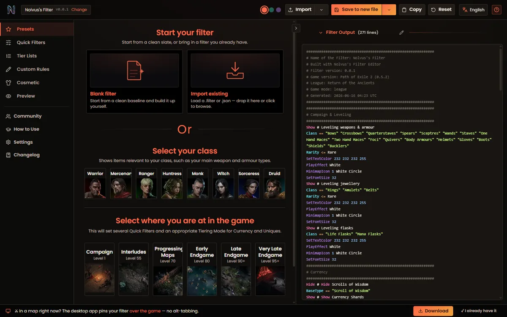

Campaign guide
Advances the route as zones change and keeps objectives, rewards and map context close to play.
Zone-aware overlay AvailableRoute guidance, automatic splits, market context, crafting, builds and filter tools stay in one companion shell—ready when the game needs the whole screen.
Free during alpha · built-in updates

01 / Module ledger
Each module owns one part of the run. They share the same desktop surface, release path and interaction language instead of sending you across disconnected tools.
Advances the route as zones change and keeps objectives, rewards and map context close to play.
Zone-aware overlay AvailableBuilds step-by-step routes from goals, counts, level triggers and linked reference images.
Authoring + playback AvailableRecords automatic zone and level splits, load-time-aware runs, personal bests and gold splits.
Automatic timing AvailableApplies currency, essences and omens to real mod pools with weights, history and backtracking.
Interactive simulator AvailableRuns Path of Building inside the companion, including the passive tree, skills, items and calculations.
Embedded planner AvailablePlaces exchange values, movement, volume, watchlists and price history beside the rest of the run tools.
Market workstation AvailableCreates, imports, previews and exports PoE2 filter rules through a visual workflow and raw output view.
Editor + preview Alpha module02 / Operation
ExileCodex is designed around a continuous session rather than a sequence of marketing features.
One desktop shell brings the installed modules and local preferences into the session.
Campaign and timing context can advance from the game state instead of waiting for manual housekeeping.
Market, build, crafting and filter workflows stay inside the same companion surface.
The release and updater path keeps the alpha moving without rebuilding the setup by hand.
03 / Build queue
No invented dates or progress bars. The queue reports the current alpha line and the next named modules.
INSTALL / WINDOWS / X64
The public GitHub release is the source for the Windows installer. Install once; ExileCodex handles its built-in update path from there.
Open the latest release